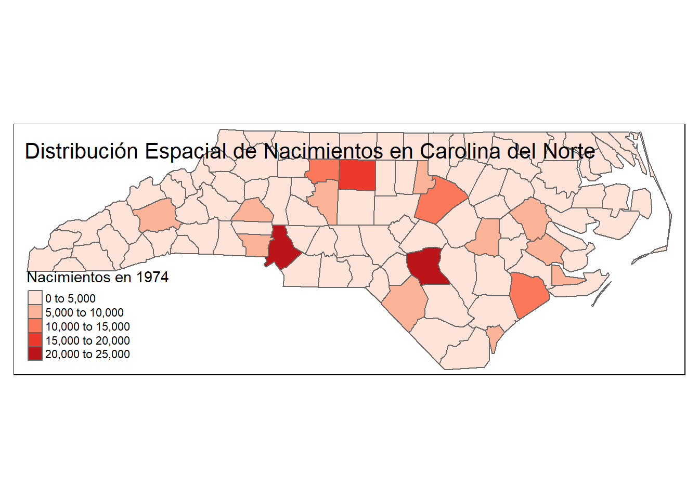
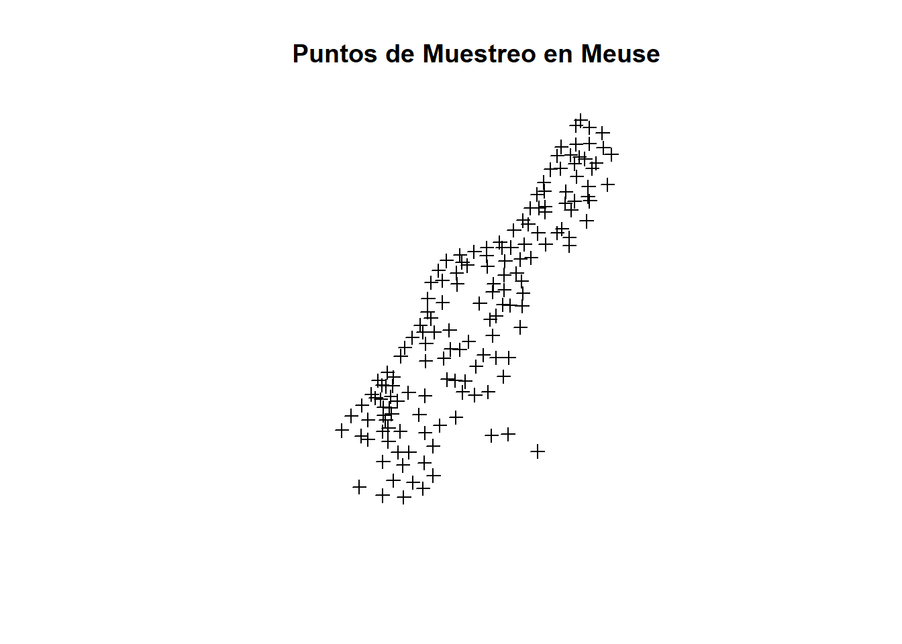
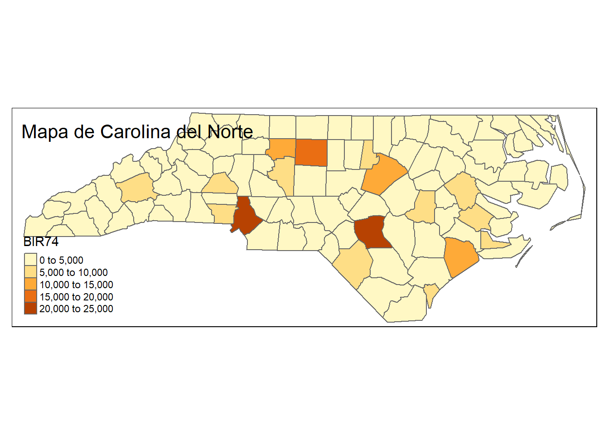
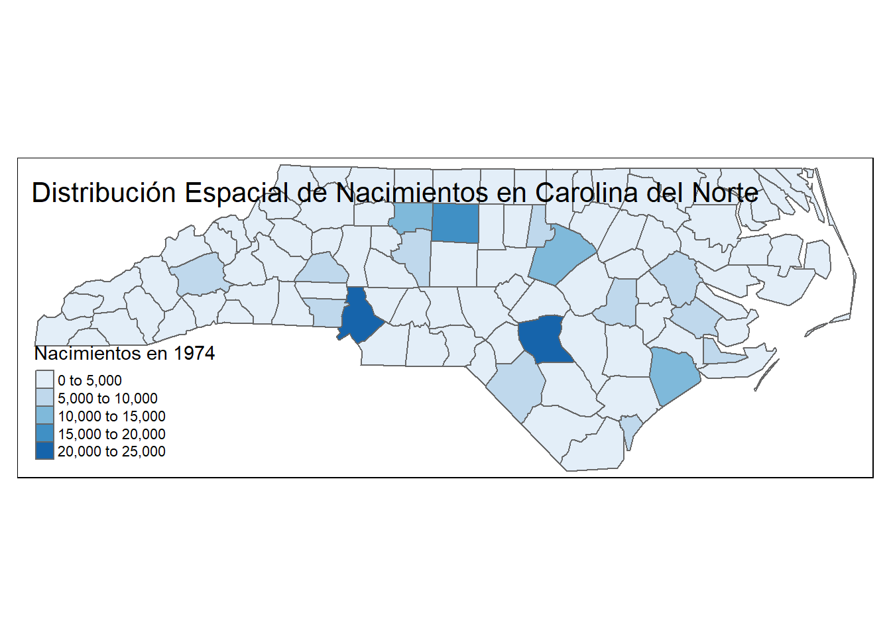

3Importancia de los Datos Espaciales en la Ciencia de Datos
3.1 Introducción
Los datos espaciales son fundamentales en diversas áreas de la ciencia de datos debido a su capacidad para proporcionar información georreferenciada que puede revelar patrones, tendencias y relaciones que no son evidentes con datos no espaciales. En esta presentación, exploraremos herramientas y métodos en R para el análisis de datos espaciales y discutiremos su importancia en la ciencia de datos.
3.2 ¿Qué son los Datos Espaciales?
Los datos espaciales son aquellos que tienen una referencia geográfica asociada, es decir, están vinculados a una ubicación específica en la superficie terrestre. Pueden ser de dos tipos principales:
Raster: Representan variables continuas, almacenadas en una matriz de celdas (imágenes satelitales).
Estos datos se utilizan para mapear y analizar características geográficas y fenómenos espaciales.
3.3 Importancia de los Datos Espaciales
3.3.1 Identificación de Patrones Espaciales
Los datos espaciales permiten identificar patrones que no son visibles en datos no espaciales. Por ejemplo, en epidemiología, se pueden detectar áreas con alta incidencia de enfermedades.
library(sf)library(tmap)# Cargar un conjunto de datos espacialesnc <-st_read(system.file("shape/nc.shp", package="sf"))
Reading layer `nc' from data source
`C:\Users\alex_ergostats\AppData\Local\R\win-library\4.3\sf\shape\nc.shp'
using driver `ESRI Shapefile'
Simple feature collection with 100 features and 14 fields
Geometry type: MULTIPOLYGON
Dimension: XY
Bounding box: xmin: -84.32385 ymin: 33.88199 xmax: -75.45698 ymax: 36.58965
Geodetic CRS: NAD27
# Crear un mapa temáticotm_shape(nc) +tm_polygons(col ="BIR74", palette ="Reds", title ="Nacimientos en 1974") +tm_layout(title ="Distribución Espacial de Nacimientos en Carolina del Norte")

3.3.2 Toma de Decisiones Informadas
En la planificación urbana, los datos espaciales son esenciales para decidir dónde construir infraestructuras como escuelas, hospitales y carreteras.
# Ejemplo de planificación urbanalibrary(sp)library(raster)# Crear datos de ejemplo para una planificación urbanadata(meuse)coordinates(meuse) <-~x+y# Visualizacion simple de los puntos de muestreoplot(meuse, main ="Puntos de Muestreo en Meuse")

3.4 Herramientas en R para el Análisis Espacial
R ofrece una amplia gama de paquetes para el análisis de datos espaciales. Entre los más utilizados se encuentran:
sf (simple features): Para manipulación y análisis de datos vectoriales.
raster: Para trabajar con datos raster.
spdep: Para análisis de datos espaciales dependientes.
tmap: Para la creación de mapas temáticos.
3.4.1 Paquete `sf`
El paquete `sf` permite la manipulación y análisis de datos vectoriales espaciales. Proporciona una interfaz eficiente para trabajar con datos espaciales en R.
# Cargar el paquete sflibrary(sf)# Leer un conjunto de datos espacialesnc <-st_read(system.file("shape/nc.shp", package="sf"))
Reading layer `nc' from data source
`C:\Users\alex_ergostats\AppData\Local\R\win-library\4.3\sf\shape\nc.shp'
using driver `ESRI Shapefile'
Simple feature collection with 100 features and 14 fields
Geometry type: MULTIPOLYGON
Dimension: XY
Bounding box: xmin: -84.32385 ymin: 33.88199 xmax: -75.45698 ymax: 36.58965
Geodetic CRS: NAD27
`tmap` es un paquete en R que permite la creación de mapas temáticos. Es muy útil para visualizar datos espaciales de manera efectiva.
library(tmap)tm_shape(nc) +tm_polygons(col ="BIR74") +tm_layout(title ="Mapa de Carolina del Norte")

3.4.3 Paquete `spdep`
El paquete `spdep` es utilizado para el análisis de datos espaciales dependientes. Permite realizar análisis de autocorrelación espacial y crear matrices de pesos espaciales.
Para la estadística I de Moran global, la hipótesis nula establece que el atributo que se analiza está distribuido en forma aleatoria entre las entidades del área de estudio; es decir, los procesos espaciales que promueven el patrón de valores observado constituyen una opción aleatoria.
library(spdep)nb <-poly2nb(nc) # Crear una matriz de vecinoslw <-nb2listw(nb, style="W") # Convertir la matriz de vecinos en una lista de pesos# Realizar un test de Moran's I lo revisaremos a profundidad en las siguientes clasesmoran_test <-moran.test(nc$BIR74, lw)moran_test
Moran I test under randomisation
data: nc$BIR74
weights: lw
Moran I statistic standard deviate = 2.4055, p-value = 0.008074
alternative hypothesis: greater
sample estimates:
Moran I statistic Expectation Variance
0.139319332 -0.010101010 0.003858258
3.5 Ejemplo de un Análisis Espacial básico
Vamos a realizar un análisis práctico utilizando los paquetes `sf`, `tmap`, y `spdep`. Analizaremos la distribución espacial de una variable demográfica en Carolina del Norte.
tm_shape(nc) +tm_polygons(col ="BIR74", palette ="Blues", title ="Nacimientos en 1974") +tm_layout(title ="Distribución Espacial de Nacimientos en Carolina del Norte")

3.5.1 Análisis de Autocorrelación Espacial
La autocorrelación espacial mide el grado en el que un valor en una ubicación es similar a los valores en ubicaciones cercanas. Utilizaremos el test de Moran’s I para evaluar la autocorrelación espacial de los nacimientos en 1974.
moran_test <-moran.test(nc$BIR74, lw)moran_test
Moran I test under randomisation
data: nc$BIR74
weights: lw
Moran I statistic standard deviate = 2.4055, p-value = 0.008074
alternative hypothesis: greater
sample estimates:
Moran I statistic Expectation Variance
0.139319332 -0.010101010 0.003858258
Los resultados del test de Moran’s I nos indican si existe una autocorrelación espacial significativa en los datos.
3.6 Notas Finales
La integración de datos espaciales en la ciencia de datos es crucial para una comprensión más profunda de los fenómenos analizados. Los datos espaciales proporcionan un contexto geográfico que mejora la identificación de patrones y tendencias, lo que facilita una toma de decisiones más informada.
El uso de herramientas en R, como `sf`, `tmap`, y `spdep`, permite a los analistas realizar análisis espaciales avanzados y crear visualizaciones impactantes. Esto es esencial para campos como la epidemiología, la ecología, la planificación urbana y muchas otras disciplinas.